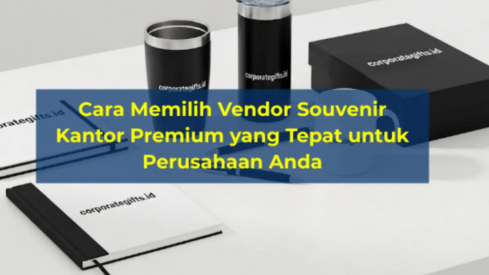

Corporate Gifts ID - Vendor souvenir kantor premium yang tepat dipilih berdasarkan lima kriteria utama, yaitu portofolio dan track record yang terpercaya, kemampuan custom desain, kualitas material dan finishing, transparansi harga, serta kepastian timeline produksi. Kelima kriteria ini memastikan souvenir yang dihasilkan konsisten mencerminkan citra profesional perusahaan.
Souvenir kantor premium adalah perpanjangan wajah korporasi yang meninggalkan kesan mendalam bagi klien B2B, mitra bisnis, maupun karyawan. Namun, kesempurnaan cinderamata tersebut sangat bergantung pada kapabilitas mitra vendor yang memproduksinya. Memilih vendor yang tepat berarti mengamankan reputasi brand perusahaan Anda dari risiko cacat produksi atau keterlambatan jadwal acara.
Poin Kunci Seleksi Vendor Souvenir Premium:
- 5 Tolok Ukur Kritis: Portofolio proyek nyata, kustomisasi fleksibel, material bersertifikasi, transparansi invoice/pajak, dan disiplin tenggat waktu.
- Pencegahan Risiko Reputasi: Menghindari hasil sablon luntur, packaging rusak, serta kegagalan distribusi saat event penting.
- Kemitraan Jangka Panjang: Membangun hubungan strategis untuk mendapatkan prioritas antrean pengerjaan dan efisiensi anggaran jangka panjang.
- Kelengkapan Legalitas B2B: Ketersediaan Surat Penawaran resmi, e-Faktur PPN, dan Berita Acara Serah Terima (BAST).
Mengapa Pemilihan Vendor Souvenir Kantor Premium Sangat Penting
Vendor souvenir bukan sekadar penyedia barang, melainkan mitra strategis dalam mengomunikasikan nilai-nilai perusahaan kepada pihak eksternal. Jika proses seleksi vendor dilakukan secara serampangan hanya berpatokan pada harga termurah, perusahaan berisiko menghadapi berbagai konsekuensi fatal:
- Penurunan Standar Kualitas: Material rapuh atau hasil cetak yang mudah terkelupas sehingga merusak impresi eksklusivitas.
- Keterlambatan Distribusi: Proses produksi molor melewati tanggal perhelatan rapat kerja, kickoff, atau corporate gathering.
- Ketiadaan Fleksibilitas Desain: Ketidakmampuan vendor menerapkan warna korporat yang presisi sesuai buku panduan identitas merek (brand guidelines).
- Dampak Negatif pada Brand Image: Kekecewaan klien VIP penerima hadiah yang menganggap perusahaan tidak menghargai hubungan kemitraan.
5 Kriteria Utama Memilih Vendor Souvenir Premium
Gunakan lima parameter berikut sebagai pedoman standar bagi tim Human Resources (HR), General Affairs (GA), maupun Procurement dalam melakukan uji kelayakan (due diligence) vendor:
1. Portofolio dan Track Record yang Terpercaya
Vendor berpengalaman selalu memiliki rekam jejak yang transparan, didukung dokumentasi foto proyek nyata bersama instansi BUMN, kementerian, hingga korporasi multinasional. Hal ini menjadi bukti nyata atas konsistensi dan integritas layanan yang mereka berikan.

Pemeriksaan ketat pada detail kustomisasi logo deboss, laser engraving, dan kualitas packaging hardbox.
2. Kemampuan Custom dan Desain Eksklusif
Cinderamata kelas atas membutuhkan sentuhan diferensiasi unik. Pilihlah penyedia souvenir custom yang sanggup merancang konsep dari nol, menyediakan preview mockup visual 3D, serta menyesuaikan packaging custom rigid box berperekat magnetik.
3. Kualitas Material dan Standar Finishing
Selalu minta sampel produk (dummy) fisik sebelum menyetujui kontrak produksi massal. Periksa secara teliti material yang digunakan—misalnya apakah tumbler memakai baja tahan karat bersertifikasi SUS 304 food-grade atau kulit sintetis bertekstur halus tanpa aroma kimia menyengat.
4. Kejelasan Harga dan Transparansi Proses RAB
Vendor profesional selalu menyajikan Rencana Anggaran Biaya (RAB) yang terperinci mencakup biaya cetak, kemasan, hingga ongkos kirim ke berbagai cabang kantor, tanpa menyembunyikan biaya tambahan di tengah proses produksi.
5. Kepastian Timeline Produksi dan Pengiriman
Komitmen tenggat waktu adalah kunci keberhasilan event korporat. Pastikan vendor memiliki SOP mitigasi kendala workshop yang jelas dan memberikan jadwal progres pengerjaan secara berkala.
Tabel Komparasi Vendor Profesional vs Non-Spesialis
Tabel berikut membedah perbedaan mendasar antara vendor corporate gift profesional berstandar B2B dengan percetakan umum non-spesialis:
| Parameter Penilaian | Vendor Profesional (CorporateGifts.ID) | Vendor Percetakan Non-Spesialis |
|---|---|---|
| Kustomisasi Desain | Mockup 3D gratis, pantone matching, layout presisi | Terbatas pada template standar bawaan pabrik |
| Quality Control (QC) | Pemeriksaan bertingkat per unit produk & kemasan | QC acak berisiko tinggi terhadap produk cacat |
| Transparansi Dokumen | Surat Penawaran resmi, e-Faktur PPN, BAST lengkap | Kwitansi manual, sering terkendala urusan perpajakan |
| Garansi & Tenggat Waktu | Garansi penggantian unit cacat & on-time delivery | Tanpa jaminan tertulis, risiko molor tinggi |
Tips Menjalin Hubungan Jangka Panjang dengan Vendor Souvenir
Membangun relasi kemitraan jangka panjang dengan vendor souvenir pilihan memberikan banyak keuntungan strategis bagi efisiensi operasional kantor:
- Komunikasi Terbuka & Rinci: Sampaikan konsep tema, batas anggaran, dan ekspektasi visual sejak awal diskusi agar tim vendor dapat memberikan saran produk yang paling relevan.
- Dapatkan Prioritas Antrean Produksi: Hubungan kerja sama yang konsisten membuat pesanan mendesak (urgent order) Anda diprioritaskan di workshop saat musim puncak (peak season) akhir tahun.
- Evaluasi Berkala Pasca-Event: Berikan feedback objektif setelah serah terima produk selesai untuk terus meningkatkan standar mutu pada proyek pengadaan berikutnya.
Contoh Souvenir Premium yang Ideal Dipesan
Beberapa kategori produk unggulan yang paling direkomendasikan untuk pengadaan korporat antara lain:
- Tumbler Stainless Vacuum SUS 304: Dilengkapi grafir laser logo instansi yang tahan abrasi seumur hidup.
- Executive Leather Notebook: Buku catatan bersampul kulit sintetis dengan teknik deboss timbul yang sangat berkelas di meja kerja.
- Smart Gadget & Wireless Charger: Perangkat pengisi daya nirkabel berbalut kayu bambu ramah lingkungan untuk segmen tech modern.
- Executive Metal Pen Set: Pulpen logam berbobot mantap dalam hardbox eksklusif untuk seremoni penandatanganan perjanjian kerja sama.
Butuh konsultasi pengadaan souvenir kantor premium yang terpercaya? Kunjungi katalog produk resmi kami atau ajukan permohonan penawaran harga melalui formulir permintaan penawaran (RFQ) untuk mendapatkan estimasi biaya transparan dan mockup gratis.